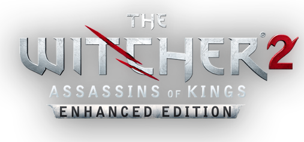
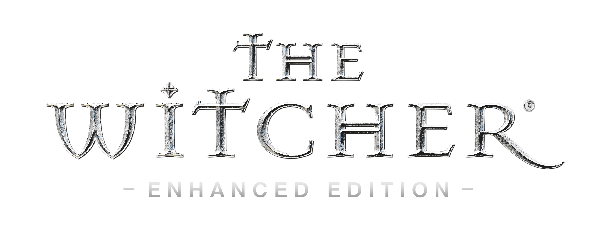
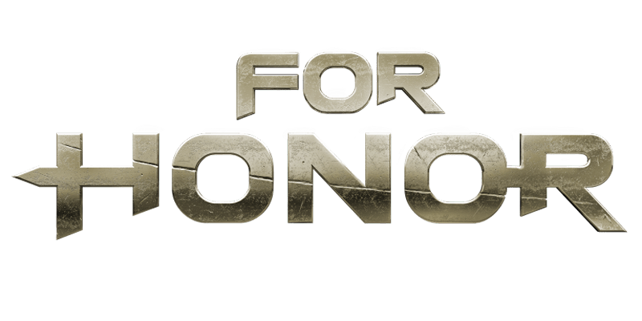
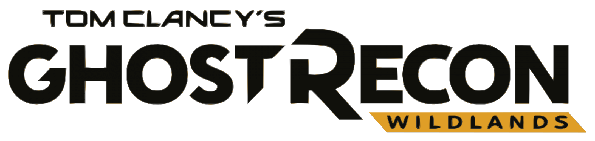

«Ведьмак 3: Дикая Охота»— мультиплатформенная компьютерная игра в жанре action/RPG, разработанная польской студией CD Projekt RED по мотивам серии романов «Ведьмак» польского писателя Анджея Сапковского, выпущенная в 2015 году для Windows, PlayStation 4 и Xbox One. Игра является продолжением компьютерных игр «Ведьмак» и «Ведьмак 2: Убийцы королей», заключительной частью трилогии.

Ведьма́к 2: Убийцы королей (польск. Wiedźmin 2: Zabójcy królów) — компьютерная ролевая игра, разработанная польской компанией CD Projekt RED по мотивам серии романов «Ведьмак» известного польского писателя Анджея Сапковского, продолжение (сиквел) компьютерной игры «Ведьмак» 2007 года выпуска. Игра вышла 16 мая 2011 года — в России, 17 мая — в Европе и США и 17 апреля 2012 года на Xbox 360. В мае 2015 года состоялся релиз третьей части серии — «Ведьмак 3: Дикая Охота».

«Ведьма́к» (англ. The Witcher, польск. Wiedźmin,) — компьютерная ролевая игра, разработанная польской компанией CD Projekt RED по мотивам одноимённой серии романов польского писателя Анджея Сапковского. Релиз игры на платформе Windows состоялся 24 октября 2007 года — в России, 26 октября — в Европе и 30 октября 2007 года — в США. В 2012 году вышла версия для OS X.

For Honor (с англ. — «За честь») — компьютерная игра, hack and slash файтинг с видом от третьего лица. Выпущена компанией Ubisoft для ПК, PlayStation 4 и Xbox One. В For Honor игроки могут управлять различными формами исторических солдат и воителей, из различных фракций, а именно: викингов, рыцарей и самураев (с октября 2018 года, новой фракцией У Линь). Действие игры происходит в средневековом сеттинге.

Tom Clancy’s Ghost Recon Wildlands — мультиплатформенная компьютерная игра в жанре тактического шутера, разрабатываемая Ubisoft Paris. Игра была анонсирована на E3 2015 года. Это первая игра с открытым миром во франшизе Ghost Recon. Игра вышла на платформах Windows, PlayStation 4 и Xbox One. Закрытое бета-тестирование игры проходило с 3 по 6 февраля 2017 года на платформах Windows, PS4 и Xbox One. Открытое бета-тестирование игры проходило с 23 по 27 февраля 2017 года на тех же платформах.